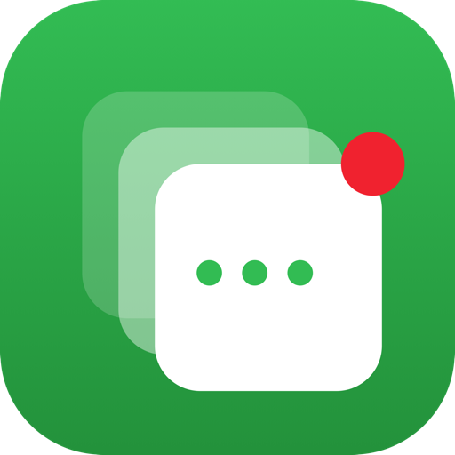

🍎
Native menu bar app
AppKit + SwiftUI, ~190 KB. No Dock clutter, no Electron, no background bloat.

WeChat MultiWeChat for Mac only lets you launch one copy at a time. WeChat Multi clones the app into isolated, uniquely-identified copies — so work, personal, two phone numbers, a burner can each stay signed in, in their own window, from a single menu bar icon.
The whole app lives in your menu bar.
Everything you'd expect from a native menu bar app — and nothing you wouldn't.
AppKit + SwiftUI, ~190 KB. No Dock clutter, no Electron, no background bloat.
Spin up a fresh, fully-isolated WeChat instance from the popover — ⌘N and you're in.
Name a clone “Work” or “Personal”. The name shows up in Cmd+Tab and the Dock.
Each clone gets a distinct dot color so you can tell instances apart at a glance.
When WeChat updates itself, one click rebuilds stale clones — preserving every signed-in session.
Built on SMAppService — no helper app, persists across reboots.
Bring any window to the front, quit one instance, or quit them all. PIDs and start times listed live.
Each clone gets its own macOS sandbox container — separate logins, separate chat history.
WeChat enforces a singleton: launch a second copy and it silently dies. WeChat Multi sidesteps that by giving each instance its own identity — so macOS treats it as a genuinely separate app.
cp -Rc from /Applications/WeChat.app into ~/Applications/WeChat Multi/. APFS makes it instant and uses no extra disk until WeChat writes.
CFBundleIdentifier → com.wechatmulti.cloneN, plus your custom display name. A unique bundle ID means a fresh sandbox container.
Ad-hoc codesign (the original Tencent signature is invalidated by the plist edit) and strip the Gatekeeper quarantine flag.
open -na the clone. WeChat's “another instance is running” check never fires — it's a different app now.
The original /Applications/WeChat.app is left untouched — keep launching it
from the Dock as your “Main account”. This tool is unofficial and not affiliated with Tencent.
Three ways in, all free. macOS 13 Ventura or later required.
The easiest path — and it auto-updates with each release.
brew tap ashinno/wechat-multi https://github.com/ashinno/wechat-multi
brew install --cask wechat-multiBoth lines are required — the tap isn't optional, since the cask lives in this repo rather than homebrew/cask. Upgrade later with brew upgrade --cask wechat-multi.
Grab the pre-built, universal .app from the latest release, then drag it into /Applications.
It's ad-hoc signed, so on first launch right-click → Open to get past Gatekeeper (just once).
SwiftPM, no third-party dependencies. A pure, fully-tested core under the hood.
git clone https://github.com/ashinno/wechat-multi.git
cd wechat-multi
./install.shNeeds Xcode Command Line Tools. swift test runs the 61-test core suite.
Windows has no app-bundle cloning, so the port uses a different technique — releasing
WeChat's named-mutex single-instance lock. It's a .NET core with native interop and a
tray app, already under windows/ with CI.